Galería del proceso
Fotografías del trabajo del equipo, piezas de comunicación e imágenes conceptuales. Cada imagen indica qué tipo de material es. Tocá una imagen para verla en tamaño completo.
Reuniones y trabajo del equipo

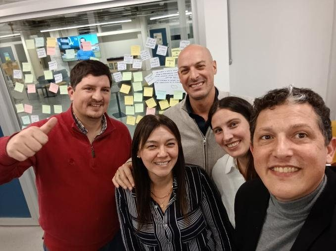

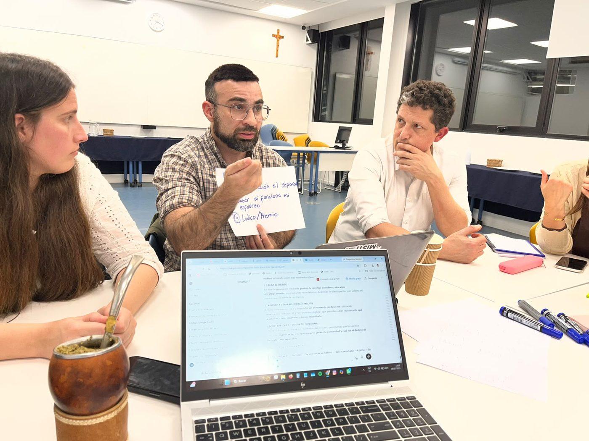
Ideación con notas adhesivas

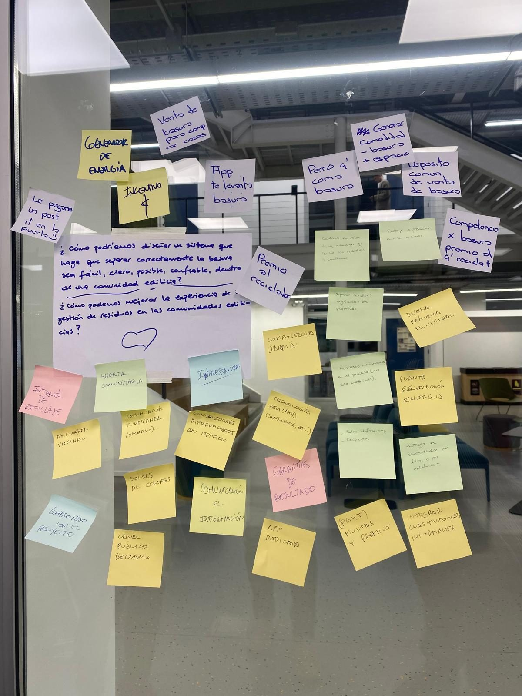

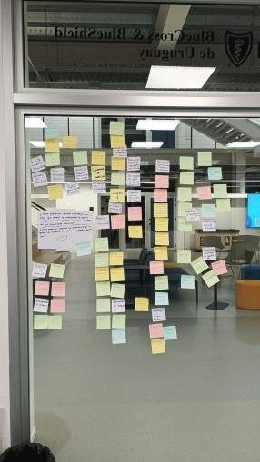

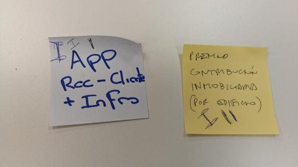

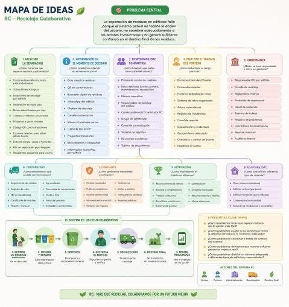
Observación del contexto

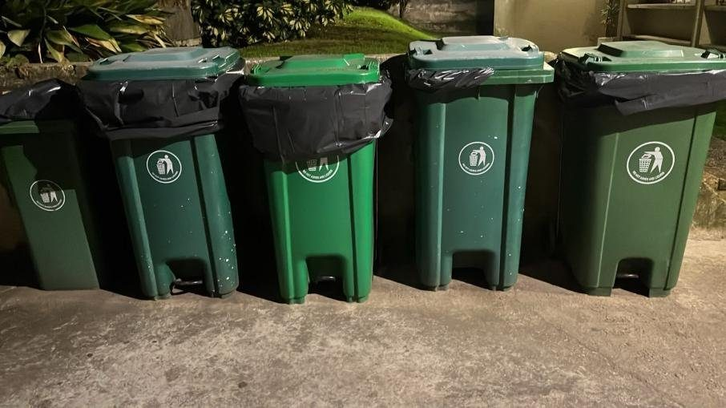

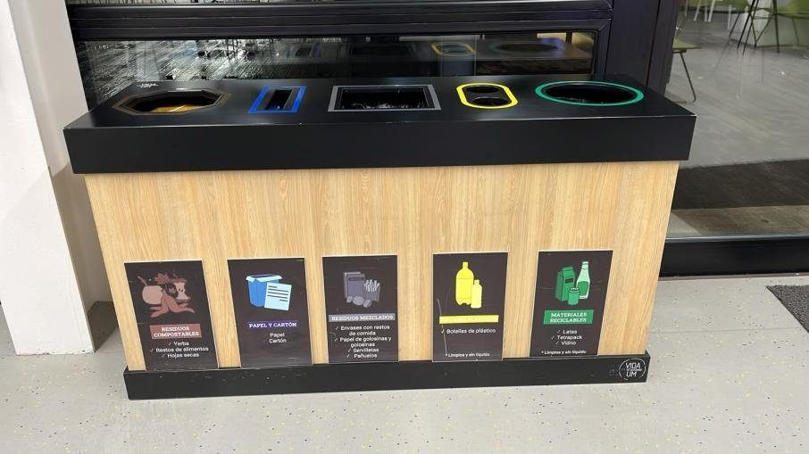

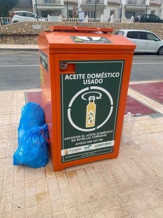

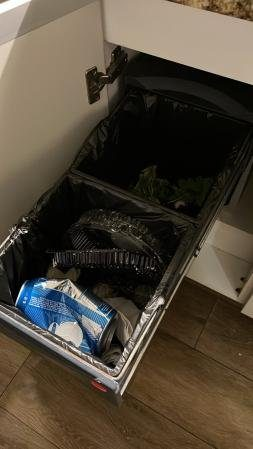

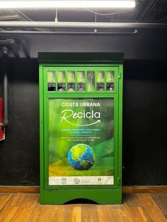
Identidad visual y piezas impresas

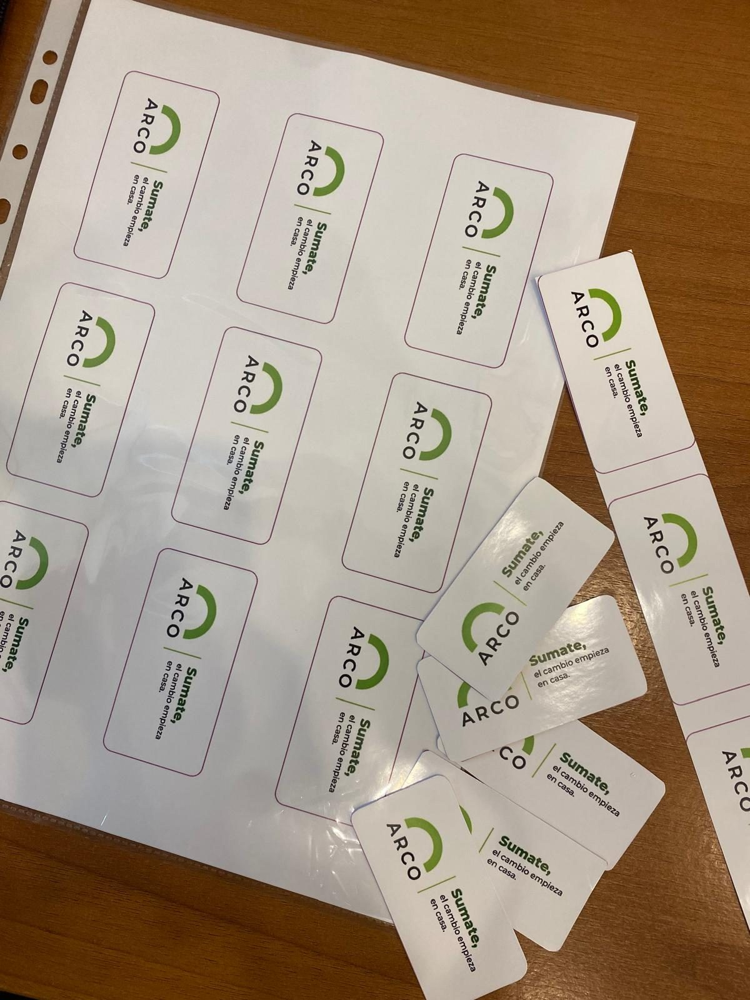

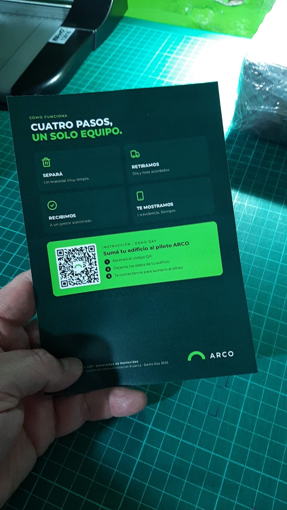

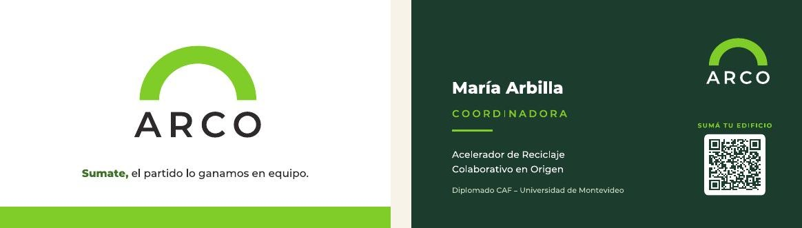
Imágenes conceptuales

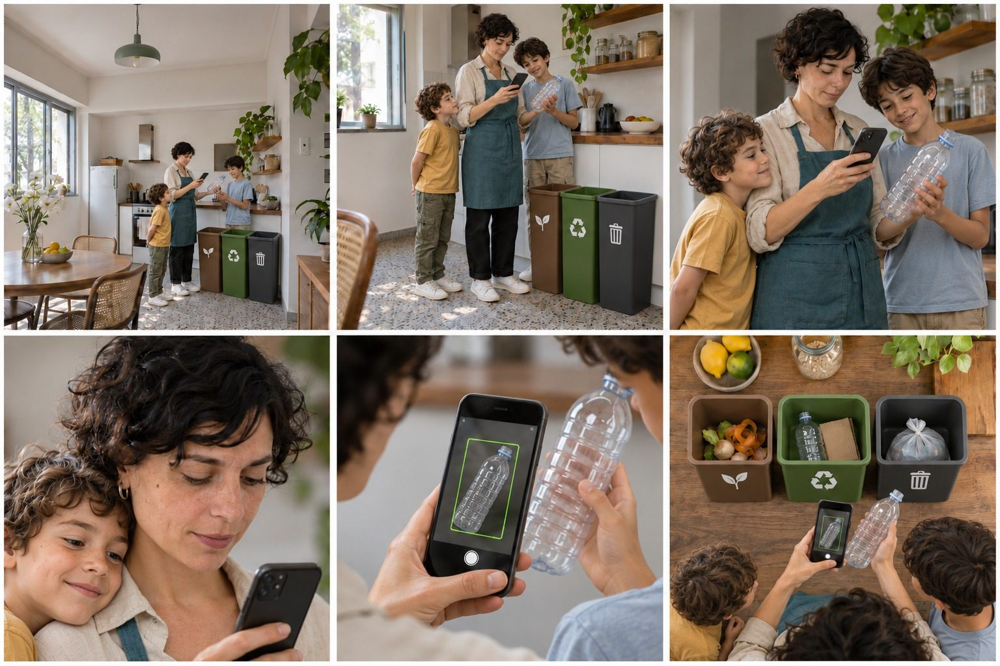

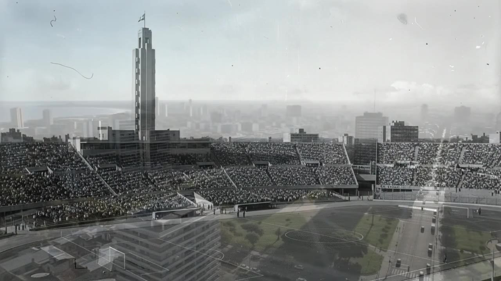
Juego educativo
No incluido en este paquete
El equipo cuenta con un juego educativo de sensibilización. Es una pieza de comunicación distinta de la herramienta operativa y no registra lotes ni datos reales. Su archivo o enlace no fue suministrado para esta versión del portal; puede incorporarse en esta sección.